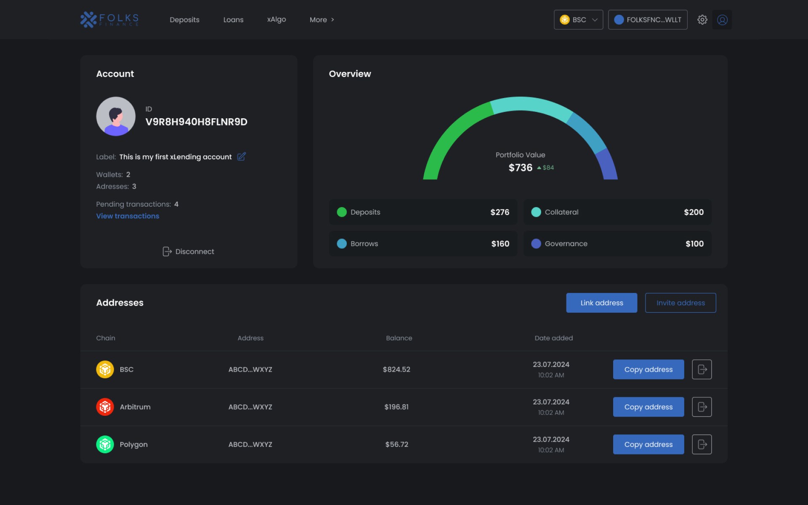
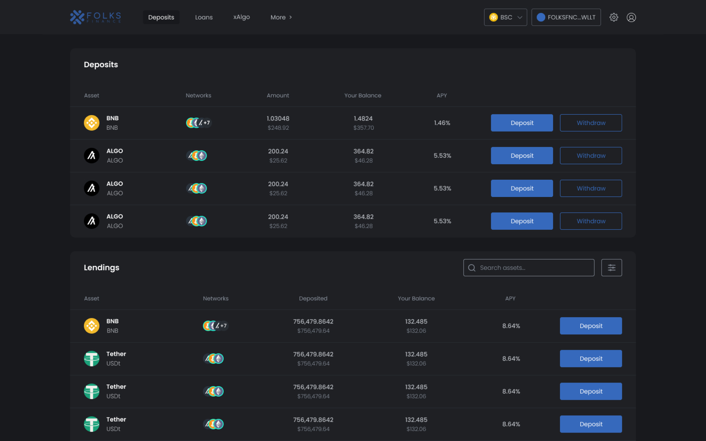
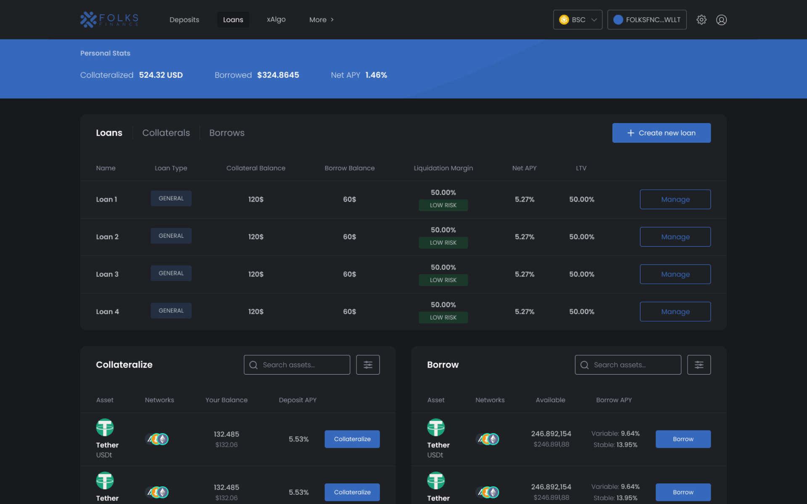

Folks Finance xApp
A cross-chain lending protocol was an innovative idea even for the crypto space. Being given the responsibility to lead the UX process, I got upon a task to redefine how decentralized finance is used for assets trading.


